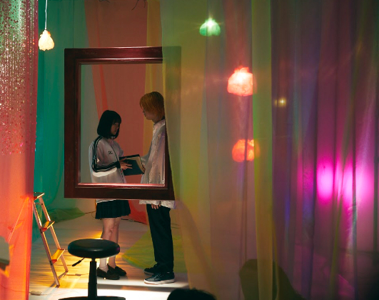

2019/0629Satホットギミックガールミーツボーイ公開中です
ホットギミック ガールミーツボーイ公開中です
早速観てくださった方々、ありがとうございます！

そして今日が私と山戸結希監督の
ラスト舞台挨拶でした
完成披露試写会から始まり、大阪、地元の岐阜、福岡、沖縄、上海、豊洲、横浜、川崎
たくさんの場所に行かせていただき、皆さまの前で
"ホットギミック ガールミーツボーイ"のお話をさせていただけて、たくさんの方が観に来てくださって嬉しい気持ちでいっぱいです。
山戸監督は女の子の気持ちをわかり尽くしている方で、わかり尽くしているのにもっと分かろうとしてくださる強くて優しい方です。
だからこそ山戸監督の撮る映像には女の子の気持ちが溢れているし、そんな女の子に向けたストーリー以上のメッセージも込められています。
溺れるナイフを観た時に、この方の作る作品が好きだ！って直感で思いました。そんな素敵な監督の作品に主演として出させていただけて本当に幸せものでした。
清水さん演じる亮輝、板垣さん演じる梓、間宮さん演じる凌、皆さんそれぞれの魅力が爆発しまくっていてそんなほかの作品では観られないような一面の魅力を引き出せるのも山戸さんならではだなぁと思っています。
めちゃくちゃ三者三様に素敵なので、必見です。
ひよりちゃん演じる茜も、上村さん演じるすばるも、茜とすばるでしかなくて2人には2人の悩みや時間が流れていて素敵でした。撮影中も2人にたくさん救われました。ありがとうございます。良き友です。
現役アイドルではありますが、
そんなガラスはとっくにぶち破ってこの映画に挑みました。全身全霊をかけて、初を演じました。
分からなくても分かりすぎても、とにかく皆さんには新たな青春を感じてほしいです。
楽しさだけではない苦しみから生まれる青いもの。そっちの方がよっぽどキラキラしてるんじゃないかなって思うんです。
なので、是非みなさんの目で、みてください。
#ホットギミック
#ホットギミックガールミーツボーイ
でたくさんの言葉を、感想をSNSに溢れさせてくださったら嬉しいです。
この作品が、よりたくさんの方の胸に届きますように...



青春でした。
初ちゃん、ありがとう。一緒に頑張ろうね。大好きです。
2019/06/29 18:54
コメント(329)
ブログ更新ありがとう！
最初に舞台挨拶お疲れ様でした。
自分も岐阜の舞台挨拶行けて良かったよ！未央奈の映画に対する想いや人生論全てが自分の心に突き刺さって、日々頑張ろうと思える。舞台挨拶に行けたことが思い出です。
そして昨日2回目観に行ってきました！改めて今までの恋愛映画とは違い、少し生々しいけど、それぞれの気持ちや感情が踏み出されていて何度も観たいと思いました。今学生の自分もモヤモヤとした気持ちを踏み出そうと思います！
また握手会で感想伝えたいと思います！
明日の握手会頑張って！
では。
最初に舞台挨拶お疲れ様でした。
自分も岐阜の舞台挨拶行けて良かったよ！未央奈の映画に対する想いや人生論全てが自分の心に突き刺さって、日々頑張ろうと思える。舞台挨拶に行けたことが思い出です。
そして昨日2回目観に行ってきました！改めて今までの恋愛映画とは違い、少し生々しいけど、それぞれの気持ちや感情が踏み出されていて何度も観たいと思いました。今学生の自分もモヤモヤとした気持ちを踏み出そうと思います！
また握手会で感想伝えたいと思います！
明日の握手会頑張って！
では。
未央奈ブログ更新ありがとう！！
テスト期間中でみれないーーーーw
終わったら5回は見に行くよ！！
テスト期間中でみれないーーーーw
終わったら5回は見に行くよ！！
今晩は！ブログ更新して頂きありがとうございます！
この度は映画公開おめでとうございます
来月か8月頃に観に行きますよ！
白い雲のように
テストもう来週の火曜日でやばたんだったんだけど見に行ったぜー！めっちゃ面白かったし！めっちゃ演技うまくてびっくりした！これからも体調に気をつけて頑張ってください！これからも推します！
テスト終わったら見に行きたいです〜
見たら絶対感想SNSで書きます！Twitterとかで！
映画まだ人生で1回しか見に行ったことないけど、2回目が堀ちゃん主演映画なんは楽しみすぎです！
これからも体に気をつけて頑張ってください！陰ながらですが応援しています！！ そういえば、今日のクイズバトルも見ました！ クイズ番組なので真面目そうな印象プラスすごい可愛かったです！ 2期生を引っ張っていく乃木坂46のエースの存在の堀ちゃんも、女優堀未央奈も、大好きです！！
見たら絶対感想SNSで書きます！Twitterとかで！
映画まだ人生で1回しか見に行ったことないけど、2回目が堀ちゃん主演映画なんは楽しみすぎです！
これからも体に気をつけて頑張ってください！陰ながらですが応援しています！！ そういえば、今日のクイズバトルも見ました！ クイズ番組なので真面目そうな印象プラスすごい可愛かったです！ 2期生を引っ張っていく乃木坂46のエースの存在の堀ちゃんも、女優堀未央奈も、大好きです！！
演技が上手いなって思ってたけど、やっぱり上手い。引き込まれるよ。未央奈ってやっぱり引き込まれるよ。
みおな、こんばんは。更新ありがとう！ 近況報告ありがとうございます。 舞台挨拶お疲れ様でした！ では、毎日みおなに良いこと沢山ありますように！ おやすみおな！！
テストもう来週の火曜日でやばたんだったんだけど見に行ったぜー！めっちゃ面白かったし！めっちゃ演技うまくてびっくりした！これからも体調に気をつけて頑張ってください！これからも推します！
ブログ更新ありがとうございます。
テスト終わったらホットギミック観にいきます。
テスト頑張るぞー！
テスト終わったらホットギミック観にいきます。
テスト頑張るぞー！
未央奈さん各地での舞台挨拶お疲れさまでした。自分はまだホットギミック観れてないので観に行くのが楽しみです。明日の個別握手会第1部に行きますのでよろしくお願いします。初めての参加なので自己紹介ができたら嬉しいです 。
。
ブログ更新ありがと～☺
沢山の舞台挨拶お疲れさまでした
沢山の人にこの作品が届くといいね(^^)
今度見に行きますねεε＝(((((ﾉ･ω･)ﾉ
沢山の舞台挨拶お疲れさまでした
沢山の人にこの作品が届くといいね(^^)
今度見に行きますねεε＝(((((ﾉ･ω･)ﾉ
ホットギミックみました！
みおな演技うますぎー！！
特に終盤なんかはすごい引き込まれました！
なんか堀未央奈は感じなくて成田初という1人の女の子の日々を一緒に味わえた感じでした！
これからも未央奈にはいろーんな映画やドラマにでてほしいな
元気でハチャメチャな役もみたいし、悪役も見てみたい！
これからも未央奈がたっくさん活躍できますように。
体に気をつけながら毎日big smileで頑張ってね！！！
みおな演技うますぎー！！
特に終盤なんかはすごい引き込まれました！
なんか堀未央奈は感じなくて成田初という1人の女の子の日々を一緒に味わえた感じでした！
これからも未央奈にはいろーんな映画やドラマにでてほしいな
元気でハチャメチャな役もみたいし、悪役も見てみたい！
これからも未央奈がたっくさん活躍できますように。
体に気をつけながら毎日big smileで頑張ってね！！！
遂に公開しましたね
次の休みが待ち遠しいです
次の休みが待ち遠しいです
ブログ更新ありがとう♡
いっぱい更新してくれるから嬉しいよ～！！
私も青春映画？とか恋愛映画はハッピーハッピーって感じのより、切なさとか苦しさが多い映画の方が好きかな。ホットギミックもそんな感じがするから、観終わった後にいろんな経験をくれるんじゃないかなってワクワクしてる！観に行くの、楽しみすぎるよ～♪
いっぱい更新してくれるから嬉しいよ～！！
私も青春映画？とか恋愛映画はハッピーハッピーって感じのより、切なさとか苦しさが多い映画の方が好きかな。ホットギミックもそんな感じがするから、観終わった後にいろんな経験をくれるんじゃないかなってワクワクしてる！観に行くの、楽しみすぎるよ～♪
堀ちゃん！2度目の更新！
ありがとう！！
ホットギミック！！早く見たいです！
来週からテストなもので
まだ見れないんですが、
今回のブログで映画の写真たくさん
見れて、またまた楽しみになってきました！
これじゃテスト集中出来なさそうです笑
でも、1週間頑張って
ホットギミックで疲れを癒したい！
川崎！どうでしたか？
わたくし、家が川崎なので、
ほんとに岐阜の堀ちゃんからしたら
The都会っていう感じだったと思います！
またの機会ゆっくり来てみてね！！
質問！！
・旅行で行ってみたい場所は？
おすすめの温泉とかもあったらぜひ！
ご回答お願いします！
それでは、次回の更新待ってます！！！
おやすみおな～！！
ありがとう！！
ホットギミック！！早く見たいです！
来週からテストなもので
まだ見れないんですが、
今回のブログで映画の写真たくさん
見れて、またまた楽しみになってきました！
これじゃテスト集中出来なさそうです笑
でも、1週間頑張って
ホットギミックで疲れを癒したい！
川崎！どうでしたか？
わたくし、家が川崎なので、
ほんとに岐阜の堀ちゃんからしたら
The都会っていう感じだったと思います！
またの機会ゆっくり来てみてね！！
質問！！
・旅行で行ってみたい場所は？
おすすめの温泉とかもあったらぜひ！
ご回答お願いします！
それでは、次回の更新待ってます！！！
おやすみおな～！！
みおなちゃん！！舞台挨拶お疲れ様☺️
ホットギミック7月に入ったら観に行く予定です！
2期生の研究生時代から未央奈ちゃんのことが大好きで 、憧れで 、ずっと応援してきたから 、、こんな素敵な女優さんとして映画の主演で 、映画館の大きなスクリーンで未央奈ちゃん観れるのがとっても嬉しいし楽しみです ！
また観たら感想ここに書くね ！
ホットギミック7月に入ったら観に行く予定です！
2期生の研究生時代から未央奈ちゃんのことが大好きで 、憧れで 、ずっと応援してきたから 、、こんな素敵な女優さんとして映画の主演で 、映画館の大きなスクリーンで未央奈ちゃん観れるのがとっても嬉しいし楽しみです ！
また観たら感想ここに書くね ！
めっちゃいい作品なんだろうなぁ
けどなんでだろう。
ホットギミックのオフショットはみたくないな
けどなんでだろう。
ホットギミックのオフショットはみたくないな
素敵だったよ！未央奈の演技に圧倒された！
堀ちゃん、ブログ更新ありがとう〜
本日、横浜の公開舞台挨拶に行かせていただきました。
カット割りや台詞の独特性が凄かった！
今まで見たこと無い、感受性溢れる最高の映画でした！
そして、堀ちゃんの素晴らしい演技に、
涙が止まりませんでした。
映画館全体が、涙に溢れていました！
本当に素晴らしい演技、映画をありがとうー
乃木坂の堀ちゃんではなく、
女優堀未央奈を観ることができて、
嬉しくもあり、遠くへ行ってしまたった様な
寂しさも感じるほど素晴らしかった！
堀ちゃん、感動をありがとう！
明日、個別握手会でこの感動を伝えさせ下さい！
まだまだ、ホットギミック観ますよ！
観ていない人は、本当にいい映画なので観て下さい！
女優堀未央奈に、絶対感動と驚きを感じます！
ほ堀ちゃん、大好きだよー
本日、横浜の公開舞台挨拶に行かせていただきました。
カット割りや台詞の独特性が凄かった！
今まで見たこと無い、感受性溢れる最高の映画でした！
そして、堀ちゃんの素晴らしい演技に、
涙が止まりませんでした。
映画館全体が、涙に溢れていました！
本当に素晴らしい演技、映画をありがとうー
乃木坂の堀ちゃんではなく、
女優堀未央奈を観ることができて、
嬉しくもあり、遠くへ行ってしまたった様な
寂しさも感じるほど素晴らしかった！
堀ちゃん、感動をありがとう！
明日、個別握手会でこの感動を伝えさせ下さい！
まだまだ、ホットギミック観ますよ！
観ていない人は、本当にいい映画なので観て下さい！
女優堀未央奈に、絶対感動と驚きを感じます！
ほ堀ちゃん、大好きだよー
ブログ更新ありがとう！
ホットギミックに対する想いがめっちゃ伝わってくる…明後日観に行くから、握手会で感想伝えるね！！
ホットギミックに対する想いがめっちゃ伝わってくる…
未央奈！
今日、横浜ブルク13で舞台挨拶付き上映を観たよ！
完全に未央奈が成田初になっていて、上映中はホットギミックの世界にのめり込むことができました。
'宇宙を感じる'
これほど適切な言葉はないかなと。
恋ほど訳のわからないものは、そんなに無いと思うしね。
すれ違いは絶対に起こり得て、何を求めて何を求められているのかもわからない。
宇宙並みに訳がわからんね。
まぁ上映中は何とも思わなかったけど、何だかんだで初を演じてるのは俺が大好きな未央奈であって、その子が演技とはいえ多くのキスシーンがあったというのは、それこそ複雑な心境に今なってるっていうのが実際のところで。
まぁヤキモチってやつかな笑
ただ、そんな感情はあるけど、あと数回はスクリーンで観ないといけないなと思ってます。
奥が深くて1回じゃわかりきってないっていうのが現状だから。
次に観た時はまた違う感情を持つかもしれないし。
無限の可能性がある映画かなと。
俺がもっと歳をとったときにふと観てみたら、どんな心境になるんだろう。
甘酸っぱい青春を思い出すのか、そうでもないのか。
映画ホットギミックは生き続けるね、確実に。
本当にいいものを観ました。
今日、横浜ブルク13で舞台挨拶付き上映を観たよ！
完全に未央奈が成田初になっていて、上映中はホットギミックの世界にのめり込むことができました。
'宇宙を感じる'
これほど適切な言葉はないかなと。
恋ほど訳のわからないものは、そんなに無いと思うしね。
すれ違いは絶対に起こり得て、何を求めて何を求められているのかもわからない。
宇宙並みに訳がわからんね。
まぁ上映中は何とも思わなかったけど、何だかんだで初を演じてるのは俺が大好きな未央奈であって、その子が演技とはいえ多くのキスシーンがあったというのは、それこそ複雑な心境に今なってるっていうのが実際のところで。
まぁヤキモチってやつかな笑
ただ、そんな感情はあるけど、あと数回はスクリーンで観ないといけないなと思ってます。
奥が深くて1回じゃわかりきってないっていうのが現状だから。
次に観た時はまた違う感情を持つかもしれないし。
無限の可能性がある映画かなと。
俺がもっと歳をとったときにふと観てみたら、どんな心境になるんだろう。
甘酸っぱい青春を思い出すのか、そうでもないのか。
映画ホットギミックは生き続けるね、確実に。
本当にいいものを観ました。
堀ちゃんこんばんは！ 40前のおじさん、大丈夫かな？(笑) 7月初めに観に行きますが。単純に堀ちゃんの演技や姿を見たいのです。青春時代を思い出すんかなぁ。今日もお疲れ様です！
とてもかわいいです これからもずっと応援してます！
観に行きます！
観に行きます！
テスト終わったらみにいく！絶対！
ホットギミック本日横浜で観ました！
堀ちゃんの体当たりの演技伝わりました‼️
すっぴんの堀ちゃんもストーリーも刺激的でした！しばらく脳裏に焼きつきます！
原作も気になり帰りに全巻買って読んでいます。
女優の堀ちゃんも応援します！次回作楽しみに待っています。
堀ちゃんの体当たりの演技伝わりました‼️
すっぴんの堀ちゃんもストーリーも刺激的でした！しばらく脳裏に焼きつきます！
原作も気になり帰りに全巻買って読んでいます。
女優の堀ちゃんも応援します！次回作楽しみに待っています。
今日見ました！！内容が複雑すぎましたー！笑笑
最後は感動で終われました
大好きです！！
最後は感動で終われました
大好きです！！
未央奈さん、舞台挨拶お疲れ様でした。
ホットギミック見に行きたいです！！！
未央奈さんが素晴らしい演技をしているのはもう見る前から分かります。未央奈さんの中の全てがこの作品の中に込められているということに、そのくらい未央奈さんにとってこの作品にかける思いや現代の方に伝えたい思いが強いんだなと感じました。
乃木坂46との両立はものすごく大変だと思います。
でも未央奈さんがやりがいを感じているのなら全力で応援します！決して身体の負担にならないようにだけしてくださいね。
ホットギミック見に行きたいです！！！
未央奈さんが素晴らしい演技をしているのはもう見る前から分かります。未央奈さんの中の全てがこの作品の中に込められているということに、そのくらい未央奈さんにとってこの作品にかける思いや現代の方に伝えたい思いが強いんだなと感じました。
乃木坂46との両立はものすごく大変だと思います。
でも未央奈さんがやりがいを感じているのなら全力で応援します！決して身体の負担にならないようにだけしてくださいね。
堀ちゃんお疲れ様です！そして本日2つ目のブログありがとう
ホットギミック絶対見にいきます！
そして色んな番組に堀ちゃんが出てて映画の主演でこんなにも番組に出るんだ～とビックリもしました！
ツアーも頑張ってね！応援してます！
ホットギミック絶対見にいきます！
そして色んな番組に堀ちゃんが出てて映画の主演でこんなにも番組に出るんだ～とビックリもしました！
ツアーも頑張ってね！応援してます！
豊洲の舞台挨拶に行きました！
10代の時の自分の居場所が分からない葛藤や不安が表現されていて、直接心に響きました
一瞬一瞬が綺麗で儚くて、とても言葉では表せないぐらい素敵な作品でした
ムビチケも買ってあるので、もう一度観てきます！
またあのワクワク、ドキドキを味わえることがとても楽しみです！
堀未央奈さんがホットギミックという作品に携わってくれて、こんな素敵な作品に出会わせてくれて、本当にありがとうございます
これからも応援しています
体調には気をつけて
10代の時の自分の居場所が分からない葛藤や不安が表現されていて、直接心に響きました
一瞬一瞬が綺麗で儚くて、とても言葉では表せないぐらい素敵な作品でした
ムビチケも買ってあるので、もう一度観てきます！
またあのワクワク、ドキドキを味わえることがとても楽しみです！
堀未央奈さんがホットギミックという作品に携わってくれて、こんな素敵な作品に出会わせてくれて、本当にありがとうございます
これからも応援しています
体調には気をつけて
未央奈、
「ホットギミック」舞台挨拶付き公演を川崎で観たよ。
遂に 未央奈の女優人生の第一歩が
始まったかと思うと、もう感無量だったよ。
気の弱い子の性格を踏まえた
表情やセリフがよかったね。
切ない気持ちや、迷ってる自信のないところが、
いい感じで伝わったよ、
自我に目覚めた時の爆発的なセリフも演技も、
すっごく素晴らしかったよ。
今日は 未央奈の最後の舞台挨拶だったね。
耳かけボブヘアーに
白メインに下の方が薄いパステルカラー の
オフショルロングワンピースの未央奈は、
もう超絶可愛かったよ。
選び抜いた言葉での丁寧な立派な挨拶は、素晴らしかったよね。
反町さんとの撮影秘話もよかったよ。
映画は、斬新なカットや.
撮り方がよかったし、
セリフもライティングも.
アップの撮り方も
素晴らしかったね。
まだ、ムビチケもあるから、
また今度は渋谷で観るね〜。
では、明日の握手会1部と5部で、
オシャレでキレイで可愛い未央奈に
会えるのを楽しみにしてるね〜。
「ホットギミック」舞台挨拶付き公演を川崎で観たよ。
遂に 未央奈の女優人生の第一歩が
始まったかと思うと、もう感無量だったよ。
気の弱い子の性格を踏まえた
表情やセリフがよかったね。
切ない気持ちや、迷ってる自信のないところが、
いい感じで伝わったよ、
自我に目覚めた時の爆発的なセリフも演技も、
すっごく素晴らしかったよ。
今日は 未央奈の最後の舞台挨拶だったね。
耳かけボブヘアーに
白メインに下の方が薄いパステルカラー の
オフショルロングワンピースの未央奈は、
もう超絶可愛かったよ。
選び抜いた言葉での丁寧な立派な挨拶は、素晴らしかったよね。
反町さんとの撮影秘話もよかったよ。
映画は、斬新なカットや.
撮り方がよかったし、
セリフもライティングも.
アップの撮り方も
素晴らしかったね。
まだ、ムビチケもあるから、
また今度は渋谷で観るね〜。
では、明日の握手会1部と5部で、
オシャレでキレイで可愛い未央奈に
会えるのを楽しみにしてるね〜。
今日の横浜の舞台挨拶観に行きましたよ。
今日でホットギミック2回目でしたが、自発的に同じ映画を何度も観ることは今までなかったです。
私の中でとても好きな映画で、不思議な中毒性があります。
成田初が堀未央奈で良かった。
また時間が許す限り何度も観に行きます！
今日でホットギミック2回目でしたが、自発的に同じ映画を何度も観ることは今までなかったです。
私の中でとても好きな映画で、不思議な中毒性があります。
成田初が堀未央奈で良かった。
また時間が許す限り何度も観に行きます！
映画今日見ました！
未央奈を見るために行ったのですが、とてもおもしろいので、
この後どうなるんだろうとか考えてて、気づいたら映画の世界に
入り込んでいました！！
ほんとに見ることができてよかった！！！
未央奈を見るために行ったのですが、とてもおもしろいので、
この後どうなるんだろうとか考えてて、気づいたら映画の世界に
入り込んでいました！！
ほんとに見ることができてよかった！！！
ブログ更新ありがとう
ホットギミック絶対に見ます❗
ホットギミック絶対に見ます❗
未央奈ブログ更新ありがとぅ！
福岡の舞台挨拶行ったよ〜
めっちゃ面白かった！！！！
こうやって未央奈の感想も見てると、未央奈がこの映画をホント一生懸命考えて演じたんだなぁってわかる気がする
スクリーンの中の初に恋してました。
また観にいきたい！
全ツ楽しみも始まるね〜
お仕事頑張って
福岡の舞台挨拶行ったよ〜
めっちゃ面白かった！！！！
こうやって未央奈の感想も見てると、未央奈がこの映画をホント一生懸命考えて演じたんだなぁってわかる気がする
スクリーンの中の初に恋してました。
また観にいきたい！
全ツ楽しみも始まるね〜
お仕事頑張って
未央奈ブログ更新ありがとう！
舞台挨拶お疲れ様！
たくさんの場所でたくさんの人に来てもらって嬉しいことだよね。
もっとたくさんの人に知ってほしいよね。
僕は昨日見て今日もまた見てきたよ。
初めて見たときはめまぐるしい展開と、感情に訴えてくるところに圧倒されて、不思議な感覚だった。
二度目に見ると、このシーンがあのシーンにつながってるんだとか、このセリフが初ちゃんの気持ちに影響してるのかなとか、色々な発見があったよ。
もっと何回も見てもっと初ちゃんの感情を深くわかりたいと思ったよ。
できることなら毎日見たいくらい。
そして初ちゃんの青春に触発されて、僕は未央奈に大好きって伝えたくなった。
舞台挨拶お疲れ様！
たくさんの場所でたくさんの人に来てもらって嬉しいことだよね。
もっとたくさんの人に知ってほしいよね。
僕は昨日見て今日もまた見てきたよ。
初めて見たときはめまぐるしい展開と、感情に訴えてくるところに圧倒されて、不思議な感覚だった。
二度目に見ると、このシーンがあのシーンにつながってるんだとか、このセリフが初ちゃんの気持ちに影響してるのかなとか、色々な発見があったよ。
もっと何回も見てもっと初ちゃんの感情を深くわかりたいと思ったよ。
できることなら毎日見たいくらい。
そして初ちゃんの青春に触発されて、僕は未央奈に大好きって伝えたくなった。
ほんとに堀未央奈はすごいと思わせられた映画だったよ！
舞台挨拶お疲れさまでした。
最近、テレビや雑誌で未央ちゃんをいっぱい観れて幸せです。
ホットギミック早く観に行かなきゃな
これからも体調に気をつけてお仕事頑張ってね
最近、テレビや雑誌で未央ちゃんをいっぱい観れて幸せです。
ホットギミック早く観に行かなきゃな
これからも体調に気をつけてお仕事頑張ってね
堀ちゃん！
見てきたよ！
凄い良かった！
見てきたよ！
凄い良かった！
未央奈ちゃん、こんばんは！
「ホットギミック ガールミーツボーイ」を観てきました！！
恋愛映画というより、人間の内面の部分や若者特有の葛藤や悩みなど、そういったものを恋愛を媒体として伝えているように感じました！
なので、女子中高生などだけでなく、男女共に幅広い世代の人が楽しめるのではないかと思いました！！
とても心を動かされるシーンも沢山ありましたし、本当に素晴らしかったです！
ありがとうございました！！
あと、女優堀未央奈のファンにもなったので、これから映画やドラマなど、沢山出演してほしいなって思いました！！
また月曜日に、今度は親友を誘って2人で観に行きます！！
1度目でわからなかった部分も少しあったので、2度目で理解できたらいいなって思ってます！
沢山の方に観て頂けるといいですね！！
最後に質問を書きます！
「ホットギミック ガールミーツボーイ」で成田初を演じた時、成田初を自分の中に取り込んだのか、それとも成田初に憑依したのか、はたまた全く違う方法なのか、お聞かせ下さい！
個人的には、初ちゃんに未央奈ちゃんを感じなかったので、憑依型なのかな？と予想してます笑
でも、このどちらかって感じじゃなくて、未央奈ちゃんなりの表現で答えて頂いても良いですし、その方が面白いなって思います！！
質問も長くなってしまいすみません…
未央奈ちゃん、大好きです
「ホットギミック ガールミーツボーイ」を観てきました！！
恋愛映画というより、人間の内面の部分や若者特有の葛藤や悩みなど、そういったものを恋愛を媒体として伝えているように感じました！
なので、女子中高生などだけでなく、男女共に幅広い世代の人が楽しめるのではないかと思いました！！
とても心を動かされるシーンも沢山ありましたし、本当に素晴らしかったです！
ありがとうございました！！
あと、女優堀未央奈のファンにもなったので、これから映画やドラマなど、沢山出演してほしいなって思いました！！
また月曜日に、今度は親友を誘って2人で観に行きます！！
1度目でわからなかった部分も少しあったので、2度目で理解できたらいいなって思ってます！
沢山の方に観て頂けるといいですね！！
最後に質問を書きます！
「ホットギミック ガールミーツボーイ」で成田初を演じた時、成田初を自分の中に取り込んだのか、それとも成田初に憑依したのか、はたまた全く違う方法なのか、お聞かせ下さい！
個人的には、初ちゃんに未央奈ちゃんを感じなかったので、憑依型なのかな？と予想してます笑
でも、このどちらかって感じじゃなくて、未央奈ちゃんなりの表現で答えて頂いても良いですし、その方が面白いなって思います！！
質問も長くなってしまいすみません…
未央奈ちゃん、大好きです
お疲れ様です！！
ホットギミック公開されましたね！！
見に行きたいけど学校とバイトとかがあってまだ見に行けてないです、、
でも時間を見つけて絶対に観に行きます！！
愛知での個握当たったので行きます！！
よろしくお願いします！！
全ツの準備とかで忙しいと思うけど休める時はしっかり休んで体調に気をつけてください！！
これからも応援してます！！
ホットギミック公開されましたね！！
見に行きたいけど学校とバイトとかがあってまだ見に行けてないです、、
でも時間を見つけて絶対に観に行きます！！
愛知での個握当たったので行きます！！
よろしくお願いします！！
全ツの準備とかで忙しいと思うけど休める時はしっかり休んで体調に気をつけてください！！
これからも応援してます！！
今日観てきました！！
なんて言ったらいいか分からないというか言葉にできないくらいすごい映画でとても考えさせられる映画でした！
ほんとに心に沁みました！！
久しぶりにいい映画だなって思いました！！
初ちゃんおつかれ様でした！！
また2回目観に行きます！
なんて言ったらいいか分からないというか言葉にできないくらいすごい映画でとても考えさせられる映画でした！
ほんとに心に沁みました！！
久しぶりにいい映画だなって思いました！！
初ちゃんおつかれ様でした！！
また2回目観に行きます！
ブログ更新有難うございます
公開初日に観に行きました。
今までの青春映画とは違う魅力がたくさん詰まった素晴らしい作品でした。正直、予想をはるかに超える作品で、一日たっても、ずっと余韻に浸ってます。何回でも観たくなります。それほど素晴らしい作品で、未央奈さんの演技力も初映画、初主演とは思えないほど凄かったです。これからの未央奈さんがより一層楽しみになりました。
今までのアイドルの壁をぶち破っていく、乃木坂というグループ、そして未央奈さんが大好きです。これからもどんどん新しい道を広げてください。応援しています。
公開初日に観に行きました。
今までの青春映画とは違う魅力がたくさん詰まった素晴らしい作品でした。正直、予想をはるかに超える作品で、一日たっても、ずっと余韻に浸ってます。何回でも観たくなります。それほど素晴らしい作品で、未央奈さんの演技力も初映画、初主演とは思えないほど凄かったです。これからの未央奈さんがより一層楽しみになりました。
今までのアイドルの壁をぶち破っていく、乃木坂というグループ、そして未央奈さんが大好きです。これからもどんどん新しい道を広げてください。応援しています。
沖縄からこんばんは。
初の主演映画おめでとうございます。とても素敵でした。
真夏の全国ツアー、体調管理に気をつけてください。
これからも応援してます。
初の主演映画おめでとうございます。とても素敵でした。
真夏の全国ツアー、体調管理に気をつけてください。
これからも応援してます。
未央奈～～～～。
まだ、ホットギミック ガール見れてない。すまネッス。
これを気に色々な作品で活躍されることをせつに願います。そしたら奇跡が起きて、回りまわって、未央奈にあえたりして。ナンテね。
じゃ。
まだ、ホットギミック ガール見れてない。すまネッス。
これを気に色々な作品で活躍されることをせつに願います。そしたら奇跡が起きて、回りまわって、未央奈にあえたりして。ナンテね。
じゃ。
ホットギミック見ました。
背中を押してくれるそんな作品だと思いました。
紛れもなく初ちゃんを演じている未央奈さんはアイドルではなく女優だと思いました。
これを機にもっと演技をしている未央奈さんを見たいです。
背中を押してくれるそんな作品だと思いました。
紛れもなく初ちゃんを演じている未央奈さんはアイドルではなく女優だと思いました。
これを機にもっと演技をしている未央奈さんを見たいです。
見に行きたいけど見に行く勇気がない笑笑
ちょっと情報聴いてるけど まぁ絶対行くからね！✌️
ちょっと情報聴いてるけど まぁ絶対行くからね！✌️
早速昨日見てきました！
感動しました！
みおなとても頑張ってましたね！
応援してます！
感動しました！
みおなとても頑張ってましたね！
応援してます！
みおな

前をむいて堂々とスピーチしたい
俺は、
前をむいて堂々とスピーチしたい
俺は、


『ホットギミック ガールミーツボーイ』観てきました！
とにかく「何だこれは…！」という衝撃が全身を貫きました！もちろん良い意味で、です！
未央奈の言っていた「今までとは違う恋愛映画」の意味がわかった気がします。本当にすごい。超傑作。山戸結希監督、天才すぎる（笑）
ということで、「観てよかった！」と心の底から思える映画でした。こういう映画は本当に久しぶり、か初めてかもしれない。初ちゃんだけに。
初ちゃんの役は未央奈にしかできないな、と強く思いました。この役を引き受けた勇気に拍手喝采です！
初ちゃんは、スクリーンの中の架空の人物ではなくて、未央奈の中に、そしてすべての女の子の中に生きている人格のように感じました。
初ちゃんも男の子たちも、ものすごく不器用だけど人を好きになる気持ちにまっすぐなところは共通していて、素敵だなと思いました。
これはまた何度も観たくなるだろうなぁ…
素晴らしい作品を届けてくださって、ありがとうございます！
夏で暑くなるけど、ファイト！あ、ツアーも楽しみに待ってます！(^.^)